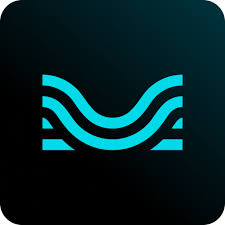

Experience
Amazon Ads
Data Engineer
Working in the Data Engineering team responsible for data onboarding into the Amazon Marketing Cloud platform
- Spearheaded a solo data migration project that deprecated a legacy dataset, reducing daily processing from hundreds of billions to 20 billion records by eliminating duplication.
- Optimized a Scala/Spark ETL workflow, shrinking the AWS EMR cluster from 300 to 50 nodes and slashing annual operational costs by $52K (74%), from ̃$70K to ̃$18K.
- Designed and deployed a high-throughput internal API using Kotlin, materializing 10 million daily records from an Apache Iceberg table into DynamoDB to serve data to internal services.
AWS (EMR, DynamoDB, S3, Lambda, Athena), Scala, Apache Spark, Kotlin, SQL
Liao Lab Group @ NYU Courant Institute
Junior Laboratory Associate
Worked as Junior Laboratory Associate at Liao Group, helping Professor Susan Liao with biological computing research focused on RNA splicing.
- Developed a web interface using JavaScript, Flask, HTML/CSS for visualizing RNA splicing predictions, which was selected for presentation at the IEEE VisXai Workshop, improving research workflow for 5+ lab members.
- Built automated data analysis pipelines in Python using CellProfiler, Pandas, and Matplotlib to process and visualize cell profiling data from 200+ biological samples, generating actionable insights from large bio datasets.
- Mentored three undergraduate students in biological computing research, leading them presenting their work at an IEEE workshop, securing industry internships, and advancing to additional research opportunities.
JavaScript, Python, HTML, CSS, Data visualization, Data Analysis
Freelance
Software Engineer
- Led the development of abilio.ai, an AI-powered business assistant platform for Brazilian franchisees, serving 40+ users and processing hundreds of daily LLM API calls for franchise operations support.
- Developed a full-stack application with Python/Flask backend and React frontend, implementing a RAG pipeline that processed document uploads, vectorized content using embeddings, and stored knowledge in Pinecone vector database for intelligent query retrieval.
- Designed dual-knowledge-base chat system with Pinecone for vector storage, enabling AI-powered responses grounded in both general franchise operations knowledge (administrative, financial, bureaucratic) and franchise-specific documents, handling 30+ daily chat sessions.
JavaScript, Python, HTML, CSS, RAG, Vector Databases, Pinecone, LLM API
Amazon Ads
Data Engineer Intern
Interning as a Data Engineer at the Amazon Marketing Cloud (AMC) team for paid features.
- Engineered an observability framework in Scala for Spark jobs on AWS EMR, monitoring 500+ daily Spark tasks processing petabytes of data, providing detailed performance insights into shuffle, spill, and task execution metrics for distributed data pipelines.
- Developed real-time analytics dashboards in Quicksight, monitoring Spark application health, tracking performance metrics across 2 production pipelines, allowing the team to proactively identify performance bottlenecks.
- Implemented cloud infrastructure with AWS CDK in TypeScript, designing automated deployment pipelines integrated with production and beta environments, enabling near real-time data ingestion and processing of hundreds of records per minute for applications serving millions of customer data views.
Scala, TypeScript, SQL, AWS (Glue, S3, Quicksight, Athena, Lambda, CDK), Software Engineering,
Data Engineering

June 2022 - August 2022
Moises.ai
Product Data Analyst Intern
Worked on the Data Platform team focusing on delivering analysis and building dashboards for the company's new product. Orchestrated an A/B testing analysis for a novel AI-assisted songwriting editor across 2,000 users over three months.
- Orchestrated A/B testing analysis for a novel AI-assisted songwriting editor across 2,000 users over three months, using Python (NumPy, SciPy, Pandas) and statistical methods including One-Way ANOVA, Kruskal-Wallis, and post-hoc tests to evaluate model efficacy and measure feature impact.
- Developed and maintained SQL ETL pipeline in Google BigQuery with optimized queries and CRUD operations, processing 500K+ daily user events to enable streamlined data preparation for Tableau dashboards monitoring user engagement and demographics.
- Built product analytics dashboards in Tableau for key stakeholders monthly reports synthesizing insights on user behavior, directly informing product development decisions and feature prioritization for the AI music startup.
Python Libraries (Pandas, Numpy, Matplotlib), Google Big Query, SQL, Tableau
New York University
Intro to Programming Tutor & Resident Assistant
Programming Tutor:
- Conducted over 150 tutoring sessions across 2-3 classes per semester, supporting around 800 students annually with programming concepts.
- Provided flexible tutoring services, including in-person and drop-in Zoom meetings for 10+ hours weekly.
- Enhanced student engagement and understanding in Python programming through personalized instruction.
Resident Assistant:
- Created, marketed, and led student-centered hall events to promote social, educational, and emotional growth.
- Promoted interaction and construction of social networks between community and residents.
- Implemented and enforced College and Campus Living policies, promoting academic excellence.
Python programming, Teaching, Leadership, Communication, Conflict Resolution
Education
New York University
Bachelor of Science in Computer Science and Data Science
CUNY Kingsborough Community College
Aug 2018 - Dec 2020Business Administration
Skills
Python
Scala
C++
SQL
PyTorch
Data Science
Data Visualization
Data Engineering
Distributed Systems
Data Analysis
Tableau
AWS QuickSight
Google BigQuery
R
Git
Scikit-learn
TensorFlow
Teaching
Leadership
Communication
Problem Solving
Conflict Resolution